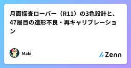
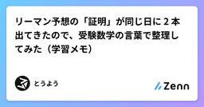
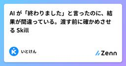

Zennの「AI」のフィード
フィード

月面探査ローバー（R11）の3色設計と、47層目の造形不良・再キャリブレーション
Zennの「AI」のフィード
ソラリスと並行して進めていたもうひとつのプロジェクトが、6輪の 月面探査ローバー「NKM-LMR-01」 です。こちらは R00 から R11 まで12回もの設計改修を重ねて DR0〜4（データ審査）を通過し、ついに Bambu Lab A1 mini での3色実機印刷へと進みました。しかし、順調にいくかと思われた白パーツの印刷中、47層目 で造形の乱れが発生して緊急停止することになりました。今回は、コンセプトアートの生成から R11 の3色CAD設計、そして実機トラブルと再キャリブレーションまでの流れをご紹介します。まずは、赤・白・緑の3色ブランドカラーで描いた月面探査ローバーの...
12時間前

MuseのAI秘書が忘れないメモリ設計の作り方｜3層に分けて古い決定と新しい決定の混線を防ぐ実践メモ
Zennの「AI」のフィード
3行まとめAI秘書のトラブルは「忘れる」ことより、古い決定と新しい決定が混ざることで起きるメモリを「今の結論／日々の記録／手順」の3層に分けると、第1層が短く保てて混線が減る訂正は「第1層を新しい結論だけに置き換え、経緯は日次ログに残す」をルールにする はじめにAI秘書で一番困るのは、忘れることでも、覚えすぎることでもない。古い情報と新しい情報が混ざること だ。たとえば「目標は A だったはずなのに、先月 B に変えたことを秘書が知らない」。これは記憶力の問題ではなく、メモリの置き方の問題だった。そこで運用ではメモリを3層に分けている。この記事の例はすべてモック。...
12時間前

【TLA+】AIにテストケースを書かせるな。ルールを書け
Zennの「AI」のフィード
「はて、このテストケース、誰が考えたんだっけ？ ほんとにだいじょぶ？」AIに頼めば、実装もテストも数秒で出て、CIが全部グリーンになってApproveボタンを押そうとしたとき、ふと手が止まりました。なんか嫌な予感。。。実装を書いたのはAIレビューしたのもAIテストを書いたのも同じAIま、だいじょぶでしょ！(大丈夫じゃない)えぇい、ままよ！ マージしちゃえ！問い: AIがコードもテストも書く時代に、テストはどう変わるのか？結論: 人間は「テストケース」を書くのをやめて、「守るべきルール」を書く理由: テストケースを考えるのは機械のほうが得意で、ルールを決められる...
13時間前

ChatGPT で決めた設計を、Codex にそのまま渡す
Zennの「AI」のフィード
たとえば、ChatGPT で一時間かけてテーブルの形と API を決めました。Codex を開いて最初にやったのは、その結論をもう一度説明することでした。長い会話を貼り付けると、途中で出て採用しなかった案まで混ざります。次に実装するエージェントが知りたいのは、どこまで決まったかです。Kagura Memory Cloud に設計の判断を一件残し、Codex で読み出す手順を、CSV エクスポートを例に試します。 ChatGPT で設計の判断を残すChatGPT の Kagura Memory Cloud プラグインと Codex の MCP を接続し、両方からアクセスできる同じコ...
13時間前

Abliteratedモデルの繰り返しループを実測して止めた話 — Ollamaとllama.cppの設定と数字
Zennの「AI」のフィード
Abliterated（無検閲化）モデルをローカルで使っていると、こんな場面に出会います。短い文章を頼んだだけなのに、モデルが同じ文を繰り返し始める。何度も、何度も。この記事は、そのループを自分のマシンで実測し、設定を1つずつ変えて記録した結果の共有です。うまくいかなかった部分と、効いた設定の副作用まで含めて書きます。測定環境：モデルは qwen3.5-abliterated:9b、Mac mini 上で Ollama と llama.cpp（llama-server）の両方で実行。プロンプトは全条件で共通（日本の四季の移り変わりについて、季節の行事や食べ物を含めた約1000文字のエ...
13時間前

リーマン予想の「証明」が同じ日に 2 本出てきたので、受験数学の言葉で整理してみた（学習メモ）
Zennの「AI」のフィード
自分が「数学ガール」を読んでいた頃、ほかにもいろいろな題材が出てきましたが、自分の中ではリーマン予想こそが未解決問題の象徴みたいな存在で、いつかちゃんと分かるようになったらいいなと思っていた問題でした。時期的には、プログラミングを始めたのと前後するくらいだったと思います。そのリーマン予想の「証明」が、2026 年 11 月、同じ日に 2 本出てきました。しかもその日が自分の誕生日で、ちょっと運命的なものを感じています。1 本は AI（Claude）と組んで Lean で形式化したもの、もう 1 本は 12 年かけて人の手だけで書かれたものです。ただ自分は大学以降の数学に詳しいわけでは...
14時間前

Stop hook と見る役 subagent を入れて詰まった 10 か所 (Claude Code 2.1.325)
Zennの「AI」のフィード
部品 (DONE.md・reviewer・Stop hook・settings) の説明と全文は正本に置いています: https://www.automateaugment.com/ja/guides/ai-agent-verify-doneこの記事は、その部品を Claude Code に入れて実際に走らせた時に、詰まった所だけの記録です。仕組みの説明は繰り返しません。部品は「見る役 (reviewer という subagent) が、今の差分の sha256 つきで合否を .review/verdict.json に書く。Stop hook は、その判定が在るか・今の差分のものか・...
14時間前
AI体験記 Vol.23：プライバシーが欲しくて・・・（入室編）
Zennの「AI」のフィード
前回のあらすじプライバシーが欲しくて、手元のMacにプライバシーLLMを作っている。macOSの「別ユーザー」で別室を作り、AIの記憶は、パスワード付きの金庫にしまう。部屋の中には囲いを作り、出口には関所を置いた。ただ、ここまで部屋にいたのは、ただ寝ているだけの「AI役」でした。今回は、いよいよ本物のAIを部屋に入れる話です。 頭脳と秘書部屋に入れるAIは、2つでできています。頭脳：言葉を考える本体。Macの上で動いている秘書：頭脳に「次はどうする？」と聞きながら、ファイルを書いたり探したりする頭脳は考えるだけで、手足を持ちません。実際にファイルに触...
14時間前

ChatGPTが生成したHTMLをコードを書かずに視覚的に編集する方法
Zennの「AI」のフィード
ChatGPTに短い指示を出せば、整ったレスポンシブHTMLページが1分足らずで出力されます。ところが、コードをコピーした直後から手が止まりがちです。中央の解説ブロックは抽象的な宣伝文句ばかり、イベントバッジは昨年の日付のまま、メインボタンのリンク先はダミーURLのまま残っています。**ChatGPTが生成したHTMLは、コードに触れずページ全体を再生成せずにビジュアル編集できます。**スタンドアロンHTMLをワークスペースへ貼り付け、冗長な1ブロックだけを選んでAIで部分修正し、確定した日付や定員・URLをキャンバス上で直接書き換えてから保存・書き出しを行います。多くの人が行き詰...
14時間前

nexus-decision-4bを同じ54問で試した。47問正解、Decision 1には届かず
Zennの「AI」のフィード
はじめに文章を書かないAI、判断専用モデルの続きです。前に Gemini Decision 1 を実際に動かして、54問中53問正解でした。今回は、その後に Hugging Face が発表した DecisionPipeline と同じ世代の、オープンウェイトの判断専用モデル nexus-decision-4b を、まったく同じ54問で試しました。結果は 47問正解（87.0%）。Decision 1 には届きませんでした。ただ、このモデルはもともとテキストの判断用に作られたもので、54問のうち46問は画像の問題です。その前提込みで読んでください。再現用のコードと結果はこちら...
14時間前
重い処理の止めどきを SSD の張り付きにして 3 日。空きが数 MB まで下がっても、SSD は張り付かなかった
Zennの「AI」のフィード
!ひとことで言うと：パソコン 1 台で、重い作業をいくつも同時に動かしている。これまでは「メモリーの残りが少なくなったら止める」決まりにしていたが、実際に困るのは「パソコンが重くなる」ときと「作業が途中で落ちる」ときだった。その 2 つが起きそうなときだけ止める決まりに変えたら、残りがほぼ無くなっても作業は最後まで終わり、パソコンの重さも感じなかった。先に、この記事の要約（専門用語なし）メモリー 32GB の PC 1 台で、重い処理（画像生成やローカル LLM）を止める目安を「空きメモリーが 1GB を切ったら」にしていた。けれど空きの量は、本当に困ることの代わりに見ていた数...
15時間前
Agent Framework ReAct
Zennの「AI」のフィード
ReActパターンは、LLM（大規模言語モデル）に「推論」と「行動」を交互に繰り返させることで、自律的にタスクを解決させるフレームワークです。2022年にGoogle ResearchのYaoらによって論文「ReAct: Synergizing Reasoning and Acting in Language Models」で提案されました。Google Research IBM 1. ReActとは何の略かReasoning（推論）+ Acting（行動）の合成語です。要素意味役割Reasoning（推論）「今どんな状況か」「次に何をすべきか」を言語で考え...
15時間前

AIにコードを書かせ続けた結果、自分のシステムを理解できなくなった話
Zennの「AI」のフィード
この1年余り、私はAIを活用して、ある知識推論システムの開発に取り組んできました。Javaでプログラムを書き、データベースを設計し、ルールエンジン、エキスパートシステム、DDD、AI Agentなど、さまざまな技術やアーキテクチャを研究してきました。AIの力を借りて、大量のコードや設計書、技術的な提案も作成しました。プロジェクトは一見すると着実に完成へ近づいているように見えました。しかし、私は次第に言葉にしがたい状況に陥っていきました。投入する時間と労力は増え、システムは複雑になる一方なのに、最初に目指していたものに本当に近づいているのか、ますますわからなくなっていたのです。最近...
15時間前

【実装編】クライアント証明書認証にも対応！PythonとGitで10万行超のコードからレビュー対象を自動抽出する
Zennの「AI」のフィード
【実装編】クライアント証明書認証にも対応！PythonとGitで10万行超のコードからレビュー対象を自動抽出する はじめに前回の記事では、GPUなし・追加利用可能メモリ16GB・完全オフラインという制約の中で、10万行以上のAngular・DjangoコードをAIでレビューするための構成を検討しました。今回から、その仕組みを実装していきます。まず作成するのは、Git差分から変更されたコードと関連コードを抽出し、レビュー用Markdownを自動生成するCLIツールです。企業の開発環境を想定し、次の条件に対応します。Gitサーバーへの接続にはクライアント証明書認証が必要...
15時間前

AI が「終わりました」と言ったのに、結果が間違っている。渡す前に確かめさせる Skill
Zennの「AI」のフィード
AI エージェントに、失敗した夜間バッチの再実行を頼んだとします（試した架空の題材の1つです）。すると、「status=SUCCESS で終わりました。12,243 行を書き出しました」と返ってきます。件数はいつもどおりです。ところが出力を開くと、金額の列に「JPY」が入っていました。取引先がこの日から CSV に列を1つ足したのに、スクリプトは列の位置のまま書き写していたのです。noticing-anomalies は、エージェントが集計・取り込み・再実行などの結果を人に渡す前に、エラーにならない小さな異変に気付かせるための Skill です。Skill は、エージェントが頼みに合う...
15時間前

AIエージェントは何を繰り返しているのか ── 1つの依頼を追いかけて知る、AIのしくみ③
Zennの「AI」のフィード
はじめにこの記事はシリーズ「1つの依頼を追いかけて知る、AIのしくみ」の第3回で、最終回です。「このバグを直して」という1つの依頼がAIの中をどう進むのかを、6つの段階に分けて追いかけてきました。ここまでをおさらいします（第1回、第2回）。アプリが材料をそえた「包み」をモデルに渡します（①）。モデルは、続きに来そうな1語を確率に応じて選び続けます（②）。そのため、それらしく見える誤りも出ます（③）。誤りが出ることを前提にすると、次の疑問が残ります。それでも Claude Code のようなアプリが「直しました」という報告までたどり着けるのは、どういう動き方をしているからなのか。...
15時間前

AIエージェントで動画を作る3つの方法：動画生成・Three.js・Blenderの使い分け
Zennの「AI」のフィード
動画生成モデルではなく、言語モデル がコードを書いて3Dアニメーション動画を作り上げてしまう。Claude Opus 5.5 の登場あたりから一気に火がついたこの「コードでアニメーションを作る」流れは、続く Claude Fable 5.2 などの最新モデルによって映画のワンシーン級の表現にまで広がり、SNSや動画プラットフォームで大きな話題になっています。「AIで動画を作る＝SoraやSeedanceのような動画生成モデルにプロンプトを投げること」と思い込んでいると、この動きは少し不思議に見えるかもしれません。けれど実際の制作現場では、動画生成モデル一択の時代はすでに終わりつつあり...
16時間前

AIエージェントを安全に動かす設計入門
Zennの「AI」のフィード
AIエージェントがだまされても被害を抑える設計を、鍵・境界・承認の3つから解説します。致命的な三要素（lethal trifecta）の数え方、資格情報を渡さない設計、検証と人の承認を通す変更の流れ、止まる設計と記憶・定期実行の扱いまでを、公開資料の事例と筆者の個人リポジトリで説明する入門書です。
16時間前
9.4GBのモデルは、サイズが合っていても壊れていた（sha256で照合する）
Zennの「AI」のフィード
title: "9.4GBのモデルは、サイズが合っていても壊れていた（sha256で照合する）"emoji: "🧩"type: "tech"topics: ["ComfyUI", "HuggingFace", "画像生成", "ローカルAI", "Python"]published: true公開前確認メモ（貼り付け時はこのコメントブロックを削除）:元原稿: 20261117_zenn_model_hash_chec...
16時間前

農業×AI 週間トレンド 2026-11-14〜2026-11-21
Zennの「AI」のフィード
!本記事は、生成AIを使って作成しています。情報の収集・要約・執筆にAIを使っています。内容に誤りを含む可能性があります。数値や発表の詳細は、各項目のリンク先 (一次情報) でご確認ください。挿絵は画像生成AIによるイメージ図のため、実際の製品や現場の様子とは異なります。このブログでは、国内外の農業分野で出たAIの発表・記事・論文を毎週集めて、何が起きているのかを俯瞰します。生産現場でAIをどう使うかを考えるための材料を、1週間ごとにお届けすることが目的です。今回は、前回の調査に続く11月14日の朝から11月21日の朝までの1週間に出た、農業の生産から出荷までに関わ...
16時間前